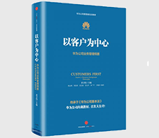

以客户为中心：华为公司业务管理纲要

| 作者: 黄卫伟 主编 | 开本: 16开 |
| 出版社: 中信出版社 | 纸张: 胶版纸 |
| 出版时间: 2016-09 | 页数: 400页 |
| 版次: 1 | 字数: 424千字 |
| ISBN: 9787508662718 | 定价: 68.00 |
| 分类: 管理 | 装帧: 精装 |
内容简介:
企业的长期战略本质上是围绕怎么成为行业领导者、怎么作行业领导者展开的。华为从成立至今，二十几年来坚持以客户为中心，聚焦核心，不为其他利益诱惑所动，力出一孔，利出一孔，长期艰苦奋斗，终于进入了世界信息与通信技术产业领先企业的行列。 《以客户为中心：华为公司业务管理纲要》是之前出版的《以奋斗者为本：华为公司人力资源管理纲要》一书的续集，将从业务管理方面，揭示这一成长历程所遵循的理念、战略与机制。 《以客户为中心：华为公司业务管理纲要》分为三篇。第一篇，以客户为中心。这是贯穿华为业务管理的主线。在开宗明义地提出“为客户服务是华为存在的唯一理由”的命题的基础上，分别阐述了华为的价值主张、质量管理战略、“深淘滩、低作堰”的商业模式，以及将客户满意度作为衡量一切工作的准绳的理念。第二篇，增长。围绕长期有效增长这一价值创造主题，系统阐述了华为的业务管理战略和政策。第三篇，效率。围绕未来的竞争是管理的竞争这一命题，阐述了华为在组织设计与运行、端到端流程持续改进，以及建设数字化企业方面的政策和原则，并深入讨论了华为管理变革的指导方针。
作者简介:
黄卫伟，北京市人，1951年10月11日出生，中国人民大学商学院教授，研究方向：运营管理、创业管理、管理政策。1996年起，受聘担任华为技术有限公司高级管理顾问至今，现为华为公司首席管理科学家，曾作为执笔人参与起草《华为公司基本法》。 编委：殷志峰 周智勇 夏忠毅 苏宝华 朱广平 王维滨
Copyright © 2018-2020 徐悦佳. All rights reserved.